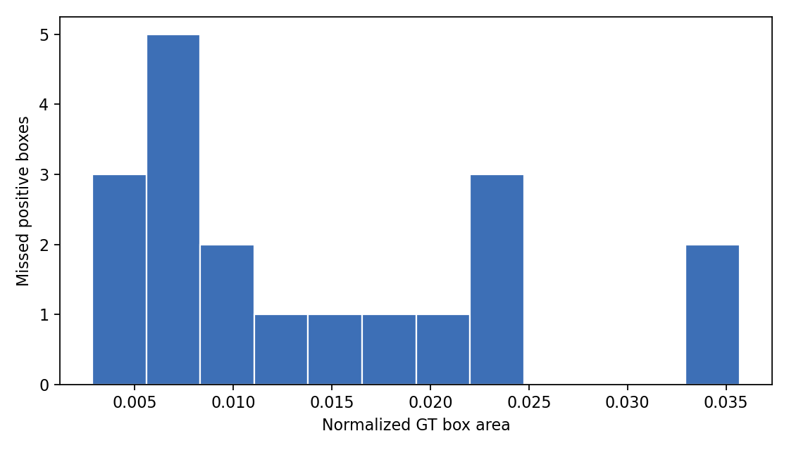

False Negative Analysis
Missed positive images at threshold 0.25. Red boxes are ground-truth positive regions missed by the detector.
FN images19
FN boxes19
Median box area0.010
Mean relative contrast1.287
Small boxes <2%14
Missed Box Area

FN Examples
.jpg) val_1 (100).jpg | max positive conf=0.049
val_1 (100).jpg | max positive conf=0.049
.jpg) val_1 (104).jpg | max positive conf=0.140
val_1 (104).jpg | max positive conf=0.140
.jpg) val_1 (118).jpg | max positive conf=0.099
val_1 (118).jpg | max positive conf=0.099
.jpg) val_1 (138).jpg | max positive conf=0.011
val_1 (138).jpg | max positive conf=0.011
.jpg) val_1 (14).jpg | max positive conf=0.000
val_1 (14).jpg | max positive conf=0.000
.jpg) val_1 (140).jpg | max positive conf=0.125
val_1 (140).jpg | max positive conf=0.125
.jpg) val_1 (141).jpg | max positive conf=0.234
val_1 (141).jpg | max positive conf=0.234
.jpg) val_1 (146).jpg | max positive conf=0.000
val_1 (146).jpg | max positive conf=0.000
.jpg) val_1 (151).jpg | max positive conf=0.022
val_1 (151).jpg | max positive conf=0.022
.jpg) val_1 (156).jpg | max positive conf=0.000
val_1 (156).jpg | max positive conf=0.000
.jpg) val_1 (16).jpg | max positive conf=0.000
val_1 (16).jpg | max positive conf=0.000
.jpg) val_1 (163).jpg | max positive conf=0.026
val_1 (163).jpg | max positive conf=0.026
.jpg) val_1 (181).jpg | max positive conf=0.015
val_1 (181).jpg | max positive conf=0.015
.jpg) val_1 (21).jpg | max positive conf=0.036
val_1 (21).jpg | max positive conf=0.036
.jpg) val_1 (25).jpg | max positive conf=0.122
val_1 (25).jpg | max positive conf=0.122
.jpg) val_1 (75).jpg | max positive conf=0.000
val_1 (75).jpg | max positive conf=0.000